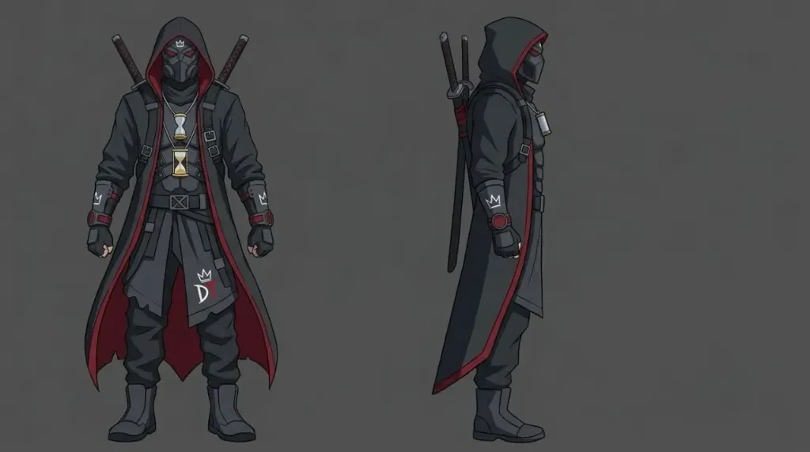
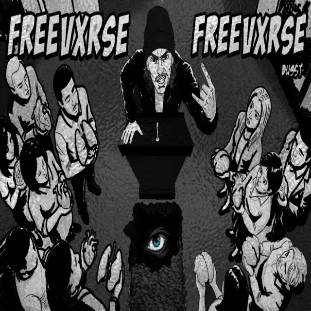
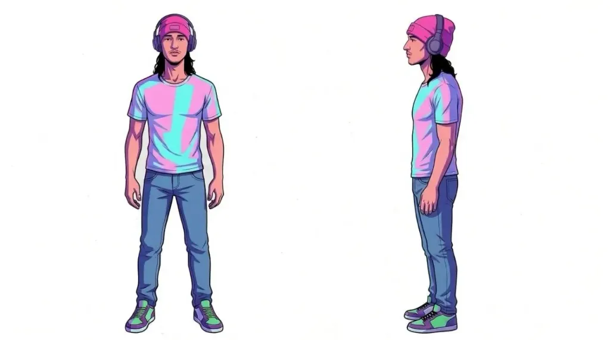
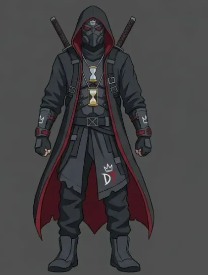
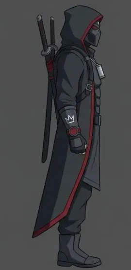
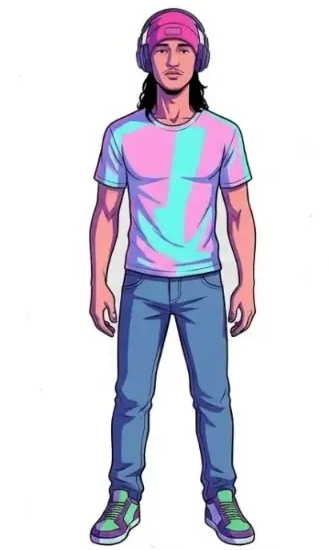
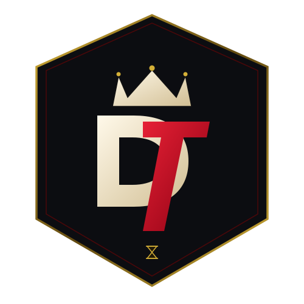

// 04 THE VISUAL VAULT
CHARACTER LORE & ARTWORKS
The official aesthetic archive of the Duss Vxrse. High-resolution character turnaround sheets, illustrated single artwork, and alchemical sigils co-created by DussT and visual director Quady Oseni (OQ).

Character Lore
Shadow Ronin Model Sheet

Cover Artwork
FREEVXRSE Cover Master

Character Lore
The Studio Architect
Logos & Sigils
Gothic Alembic Sigil

Character Lore
Ronin Front Stance

Character Lore
Ronin Side Profile

Character Lore
Studio Creator Portrait

Logos & Sigils
Ronin Monogram Crest
✦ EXPANDABLE GALLERY ARCHITECTURE
The artist noted that additional studio photographs will be ready in future sessions. This gallery is engineered so new images can simply be added to assets/images/ and registered in js/content-config.js. The responsive layout and lightbox will adapt automatically!